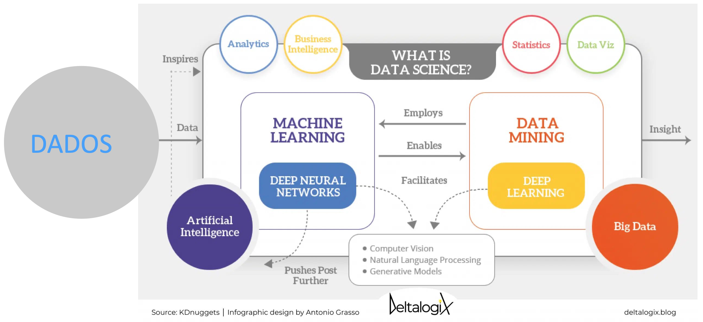
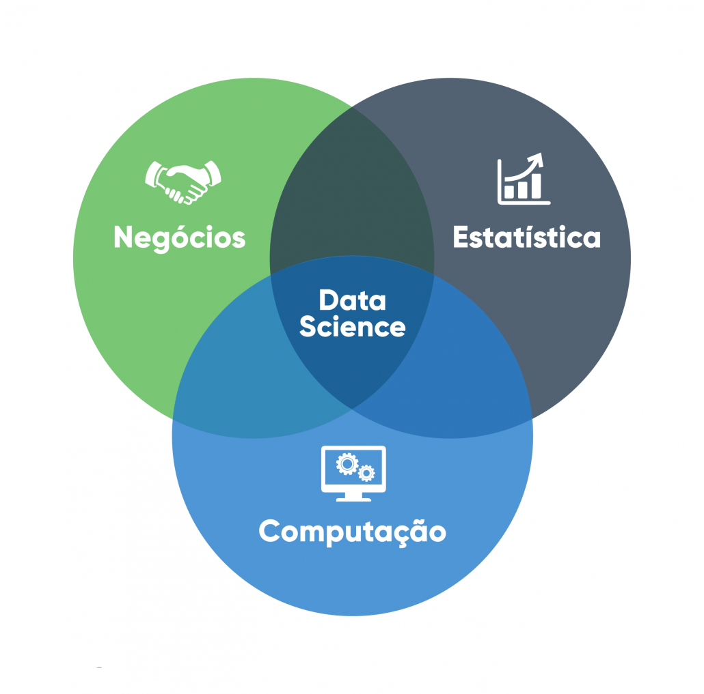

Introdução à Ciência de Dados e Inteligência Artificial¶
Faça o download do pdf de Introdução.
- arquivo pdf: Introdução

O que é Ciência de Dados?¶
Você já se perguntou como a Netflix sempre sabe qual filme você vai querer assistir? Ou como o seu banco detecta uma compra suspeita no seu cartão em segundos? A resposta está na Ciência de Dados!
A Ciência de Dados é um campo interdisciplinar que utiliza métodos científicos, processos, algoritmos e sistemas para extrair conhecimento e insights valiosos de dados estruturados e não estruturados. É evolução natural da estatística tradicional, só que com programação, matemática e conhecimento específico para resolver problemas complexos do mundo real.
Tip
"Ciência de Dados é o campo que combina estatística, análise de dados, machine learning e métodos relacionados para entender e analisar fenômenos reais através de dados." https://dl.acm.org/doi/pdf/10.1145/2500499 Dhar, 2013
Componentes Fundamentais da Ciência de Dados¶
A Ciência de Dados pode ser compreendida como a convergência de três conjuntos de competências essenciais, cuja integração é indispensável para a prática profissional eficaz:

- Habilidades de Programação Competência para manipulação, processamento e análise de dados por meio de linguagens e ferramentas computacionais, possibilitando a implementação de algoritmos e a automação de tarefas analíticas.
- Conhecimento Matemático e Estatístico Fundamentação teórica para modelagem, inferência e interpretação de dados, abrangendo conceitos como probabilidade, estatística descritiva e inferencial, álgebra linear e análise de algoritmos.
- Expertise de Domínio Compreensão aprofundada do contexto específico em que o problema está inserido, permitindo a formulação de hipóteses realistas, a correta interpretação dos resultados e a tomada de decisões embasadas.
Tip
Dica importante: Embora não seja necessário dominar todas as áreas desde o início, a atuação consistente em Ciência de Dados requer o desenvolvimento progressivo e equilibrado dessas competências, com aprofundamento gradual de acordo com o foco profissional ou acadêmico.
Por que a Ciência de Dados precisa dos três componentes (programação, matemática e conhecimento de domínio)?
História e Evolução da Ciência de Dados¶
A Ciência de Dados é resultado de um processo evolutivo que integra estatística, ciência da computação e conhecimento de domínio, impulsionado por avanços tecnológicos e pela crescente disponibilidade de dados em larga escala.
Marcos Históricos¶
-
1962: O estatístico John W. Tukey, em seu artigo "The Future of Data Analysis", propôs uma abordagem mais abrangente para a análise de dados, antecipando a integração entre estatística e métodos computacionais. Embora não tenha utilizado diretamente o termo Data Science, sua visão foi precursora.
-
1970s-1980s: A criação do modelo relacional por Edgar F. Codd (1970) e a popularização dos sistemas de gerenciamento de bancos de dados relacionais (SGBDR) transformaram a forma de armazenar e consultar dados.
- 1990s: O termo Data Mining ganhou destaque, descrevendo técnicas para extração de padrões de grandes conjuntos de dados. Paralelamente, algoritmos de aprendizado de máquina, como árvores de decisão, redes neurais artificiais e métodos de vizinhança, começaram a ser aplicados de forma mais ampla (essas técnicas já existiam antes) em cenários comerciais.
- 2001: William S. Cleveland em seu trabalho "Data Science: An Action Plan for Expanding the Technical Areas of the Field of Statistics", propôs ampliar o escopo da estatística para incluir computação, visualização de dados e aplicações multidisciplinares, formalizando parte da base conceitual da Ciência de Dados.
- 2008: DJ Patil (LinkedIn) e Jeff Hammerbacher (Facebook) são frequentemente creditados por popularizar o termo Data Scientist para descrever um profissional com competências em programação, estatística e entendimento de negócios.
- 2010s: Explosão do Big Data! Com o crescimento exponencial da geração de dados, tecnologias como Hadoop e Spark possibilitaram o processamento distribuído em larga escala. A quantidade de dados gerada globalmente passou a crescer de forma acelerada, superando rapidamente a capacidade de armazenamento e processamento tradicionais.
- 2020s: Democratização da IA e MLOps com ferramentas de inteligência artificial de código aberto e serviços baseados em nuvem tornaram o acesso à IA mais acessível. O MLOps consolidou-se como disciplina para integrar modelos de machine learning ao ciclo de desenvolvimento e operação de sistemas.
O que diferencia a Ciência de Dados da Estatística tradicional?
Tipos de Dados em Ciência de Dados¶
Nem todo dado é igual! Cada tipo tem suas características e requer técnicas específicas de preparação. Vamos conhecer os três principais:
1. Dados Estruturados¶
São os "certinhos" da turma! Organizados em formato tabular com linhas e colunas bem definidas, como uma planilha Excel bem organizada.
Exemplos práticos: - Planilhas Excel (vendas mensais, cadastro de clientes) - Bancos de dados relacionais (SQL) - como o sistema de uma loja online - Arquivos CSV - formato universal de troca de dados - Dados de sensores IoT com schema fixo (temperatura, umidade, pressão)
Vantagem: Fáceis de analisar e processar Desvantagem: Representam apenas uma pequena parte dos dados do mundo real (cerca de 20%)
2. Dados Semi-estruturados¶
Os "meio organizados"! Não seguem um formato rígido de tabela, mas possuem alguma organização que podemos aproveitar.
Exemplos práticos: - JSON (JavaScript Object Notation) - usado em APIs web - XML (eXtensible Markup Language) - comum em sistemas antigos - Logs de sistemas - rastros digitais de aplicações - Emails com metadados (remetente, data, assunto)
Vantagem: Mais flexíveis que dados estruturados Desvantagem: Precisam de algum processamento antes da análise
3. Dados Não-estruturados¶
Os "brabosssss"! Sem organização predefinida que requerem técnicas especiais de processamento. São a maioria absoluta dos dados no mundo digital!
Exemplos práticos: - Textos livres (artigos, posts no Twitter, reviews de produtos) - Imagens e vídeos (fotos do Instagram, vídeos do YouTube) - Áudios e podcasts (gravações de call center, música) - Documentos PDF (contratos, relatórios, livros)
Vantagem: Contêm informações riquíssimas e insights únicos Desvantagem: Requerem técnicas avançadas (NLP, Computer Vision) para análise